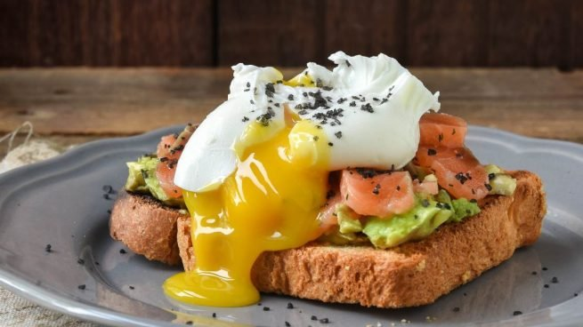

Algo diferente, rápido, rico y fresco. Ademas de ser una entrada super saludable, podes tambien usar esta receta para un desayuno super completo lleno de nutrientes.

Ingredientes de la receta
4 rodajas de pan
2 paltas
4 huevos duros
1 sobre de salmon ahumado
Sal a gusto
Pimienta a gusto
Especias a gusto
Aceite de oliva
Jugo de medio limon
Procedimiento
Pelar las paltas, quitarles el caroso y realizar cortar en rodajas. Condimentar.
Tostar el pan en sartén con aceite de oliva y especias.
Colocar la media palta sobre la tostada, una feta de salmon, colocar el huevo, un chorrito de aceite de oliva y más especias.
Tip: Es mejor que emplees un pan rústico en vez del clásico pan de molde. La experiencia es completamente distinta.